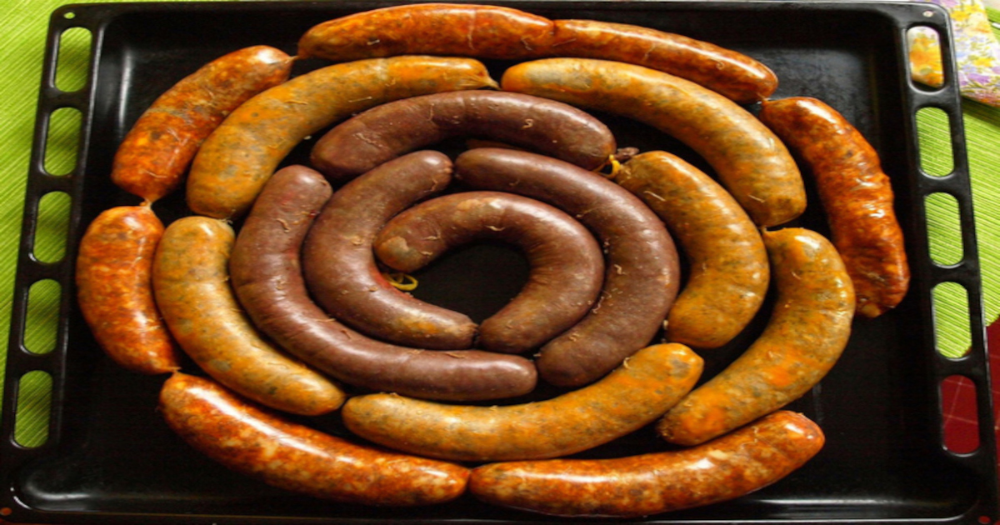

Ételeink
Lángos
Egy magyar kenyérsütemény, amelyet kis tésztakorongokból készítenek, majd fritőzben sütnek, és gyakran fokhagymás tejföllel vagy sajttal fogyasztanak.
1500 Ft

Csirkepaprikás
Egy népszerű magyar fogás, melyben a csirkét paprikás tejfölös szósszal tálalják, általában nokedlivel vagy galuskával.
1500 Ft

Hurka/Kolbász
Húsos vékony vagy vastag hüvelykujjszerű hagyományos magyar kolbász vagy hurka, amelyet sütnek vagy főznek.
1500 Ft

Bakonyi sertésragu
Egy sűrű és krémes sertéshúsragu, amelyet tejföllel és gombával készítenek, gyakran tészta vagy rizs kíséretében.
1500 Ft